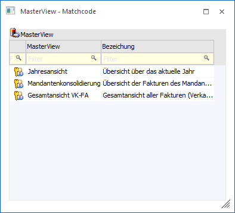
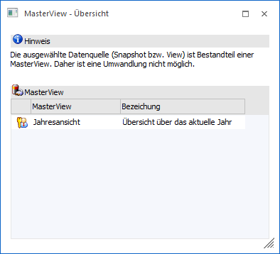
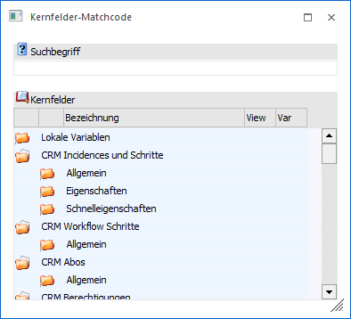
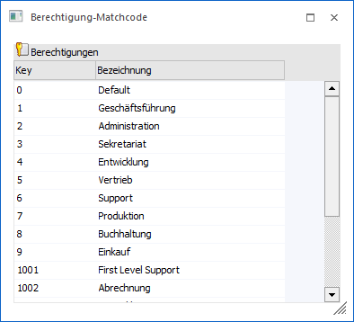
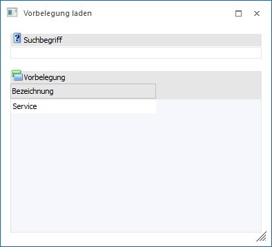

Je nachdem, aus welchem Feld bzw. Programmbereich das Fenster aufgerufen wird, stehen unterschiedliche Suchmöglichkeiten bzw. Anzeige zur Verfügung.
WinLine INFO - MasterView -> "MasterView - Matchcode"

Wird der Matchcode aus dem Feld "Name" des Programms Datenquellen - MasterView aufgerufen, so kann nach allen bereits angelegten MasterViews der Ausgangsauswertung gesucht werden.
Suchergebnis
In der Tabelle werden die gefundenen MasterViews mit ihrer Bezeichnung angezeigt. In der ersten Spalte wird zusätzlich noch dargestellt, ob es sich um eine private oder öffentliche MasterView handelt. Die Suche kann über die Suchzeile der Tabelle erfolgen. Durch einen Doppelklick auf eine Zeile wird die ausgewählte MasterView in das Ausgangsfenster übernommen.
WinLine INFO - Datenquellenverwaltung - "MasterView - Übersicht"

Soll in der Datenquellenverwaltung eine Datenquelle (Snapshot oder View) umgewandelt werden, welche Bestandteil einer MasterView ist, so ist dieses nicht möglich und es wird das Fenster "MasterView - Übersicht" geöffnet.
Ø Suchergebnis
In der Tabelle werden alle MasterViews aufgeführt, in denen die umzuwandelnde Datenquelle enthalten ist. Hierbei wird neben dem Namen auch die Bezeichnung und der Status (privat oder öffentlich) angezeigt. Durch einen Doppelklick auf eine Zeile wird die ausgewählte MasterView im Fenster Datenquellen - MasterView geladen.
WinLine INFO - Workflow Wizard - "Kernfelder-Matchcode"

Um Kernfelder im "Workflow Wizard" zu einem Workflowschritt hinzuzufügen, muss der "Kernfeld-Matchcode" verwendet werden.
Durch Anwahl des Buttons "Kernfeld hinzufügen" wird der Matchcode geöffnet und die benötigten Felder können mittels Doppelklick übernommen werden. Dabei bleibt das Fenster solange geöffnet, bis der Button "Ok" oder "Ende" angewählt wird.
Ø Suchbegriff
Im Feld "Suchbegriff" kann nach der Bezeichnung eines Kernfeldernfelds bzw. einem Teil davon gesucht werden. Die Suche selber wird durch Bestätigung des Suchbegriffs ausgelöst.
Ø Suchergebnis
In der Tabelle werden die gefundenen Kernfelder mit ihrer Bezeichnung angezeigt. Durch einen Doppelklick auf den Eintrag wird das ausgewählte Kernfeld in das Ausgangsfenster übernommen.
WinLine INFO - Workflow Wizard - "Berechtigung-Matchcode"

Um Benutzergruppen im "Workflow Wizard" zu einem Workflowschritt hinzuzufügen, muss der "Berechtigung-Matchcode" verwendet werden.
Durch Anwahl des Buttons "Objekt hinzufügen" wird der Matchcode geöffnet und die benötigten Gruppen können mittels Doppelklick übernommen werden. Dabei bleibt das Fenster solange geöffnet, bis der Button "Ok" oder "Ende" angewählt wird.
Ø Suchergebnis
In der Tabelle werden alle Benutzergruppen mit ihrer Bezeichnung angezeigt. Durch einen Doppelklick auf den Eintrag wird die ausgewählte Gruppe in das Ausgangsfenster übernommen.
WinLine INFO - Workflow Wizard - "Vorbelegung laden"

Durch Anwahl des Buttons "Vorbelegung laden" im Fenster "Workflow Wizard" wird der Matchcode geöffnet. In diesem kann nach allen bereits angelegten Vorbelegungen gesucht werden.
Hinweis
Vorbelegungen können bei einer Neuanlage erzeugt werden, wenn mindestens ein Workflowschritt inklusive Kernfeld hinterlegt wurde und der Button "Ende" gewählt wird.
Ø Suchbegriff
Im Feld "Suchbegriff" kann nach der Bezeichnung der Vorbelegungen bzw. einem Teil davon gesucht werden. Die Suche selber wird durch Bestätigung des Suchbegriffs ausgelöst.
Ø Suchergebnis
In der Tabelle werden die gefundenen Vorbelegungen mit ihrer Bezeichnung angezeigt. Durch einen Doppelklick auf den Eintrag wird das ausgewählte Kernfeld in das Ausgangsfenster übernommen.
Buttons
Ø Ok
Durch Anwahl des Buttons "Ok" bzw. der Taste F5 wird der gewählte Datensatz an das Ausgangsfenster übergeben und der Matchcode bzw. die Übersicht geschlossen.
Ø Ende
Bei Anwahl des Buttons "Ende" bzw. der Taste ESC wird das Fenster geschlossen.